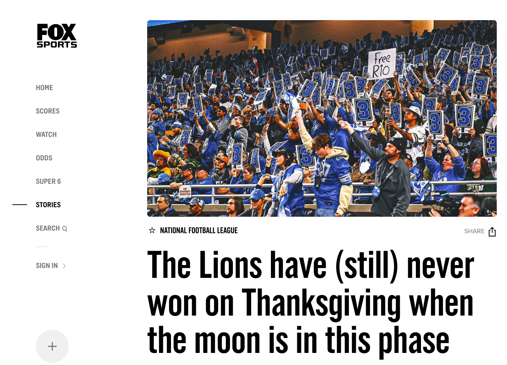

Hi! I am a fifth-year PhD-student at Heidelberg University.
I write models and design experiments to address questions in behavioral economics and industrial organisation. I have also worked with field data from professional sports.
Contact
- julian.matthes [at] awi.uni-heidelberg.de
- AWI, Bergheimer Straße 58, Room 01.007.
Short CV
- Since 2021: PhD candidate in Economics at Heidelberg University (under supervision of J. Oechssler)
- Jan-Mar 2025: Visitor at University College London (at invitation of R. Spiegler)
- 2021 - 2023: Visiting PhD student at GESS, Mannheim University
- 2016 - 2021: BSc and MSc Mathematics at Heidelberg University
Advanced Work in Progress (ask me for a draft)
On the Demand for Mental Models (with Katharina Momsen)

- Theory+Online Experiments: Do news impact beliefs if they contain no new information, but only interpretations of publicly available data? How do people value such news relative to new information?
Economic Decision Making during Moderate Physical Exercise (with Carlo Dindorf)
- Lab experiment: Does economic behavior (belief updating, other-regarding preferences, risk preferences, and adherence to GARP) change within individuals when exercising at moderate intensity versus at rest?
Early Work in Progress
Searching to Make Sense
Optimal Appraisal: An Economic Theory of Emotions (with Clément Staner)
Cross-Ownership and Public Good Provision (with Jörg Oechssler and David Piazolo)
Identifying Premeditated Cheating in Contests (with David Piazolo)
Publications
Don't Put All Your Legs in One Basket - Theory and Evidence on Coopetition in Road Cycling (with David Piazolo)
European Economic Review: Volume 170 (2024)

- Theoretical and empirical analysis: How do characteristics of competing groups impact cooperation within groups? Applications in road cycling and industrial organisation (cross-ownership).
Finding Large Rainbow Trees in Colorings of 
The Electronic Journal of Combinatorics: Volume 30, Issue 4 (2023)

- I prove that asymptotically, the bipartite graph with 2n vertices (see picture for n=5) can be partitioned into n copies of any tree with n edges.